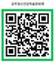

제11회
공주정신건강학술문화제
전국민 정신건강, 예방부터 치료, 회복, 증진까지
- 행사명제11회 공주정신건강학술문화제
- 주제전국민 정신건강, 예방부터 치료, 회복, 증진까지
(Prevention, Treatment, Recovery and Promotion of Mental Health for All)
- 부제마음을 보듬어 희망을 키웁니다.
- 일시2024. 6. 21.(금) 09:30~17:30
- 장소(공주문화관광재단) 아트센터 고마
- 대상정신건강 관련 전문가, 실무자, 국민 누구나(시민 등)
- 행사방법집합교육(대면)
- 참가비무료(식사 미제공)
- 내용정신건강 학술·문화프로그램(심포지엄, 대국민 특강, 워크숍, 문화공연, 뮤지컬, 북토크 등)
- 주최보건복지부, 충청남도, 공주시, 충청남도교육청, 대한신경정신의학회, 한국트라우마스트레스학회(KSTSS)
- 주관국립공주병원, 충청남도공주교육지원청, 중부권광역정신건강복지센터(대전·세종특별자치시·충청북도·충청남도),
공주시정신건강복지센터
- 접수방법
-
01
접수(사전신청)
사전 참가 신청
(국립공주병원 누리집)
-
02
사전안내
문자 또는 e-mail 안내
-
03
당일안내
참가자에게 교육과정 안내
- 접수기간2024. 5. 20.(월) ~ 6. 7.(금)
- 접수방법국립공주병원 누리집(www.knmh.go.kr) 접속 후 접수
- 비고
- 평점
평점: 수련 인정 시간-구분,수련 인정 시간(정신건강간호사,정신건강임상심리사,정신건강사회복지사,정신건강작업치료사)
| 구분 |
상시학습
(공무원) |
수련 인정 시간 |
| 정신건강
간호사 |
정신건강
임상심리사 |
정신건강
사회복지사 |
정신건강
작업치료사 |
| 6월 21일(금) |
최대
6시간 |
정신건강 학술활동(교육 및 세미나) 인정
(이수증 발급 가능)
*해당 수련기관 수련지도요원 사전동의 필요 |